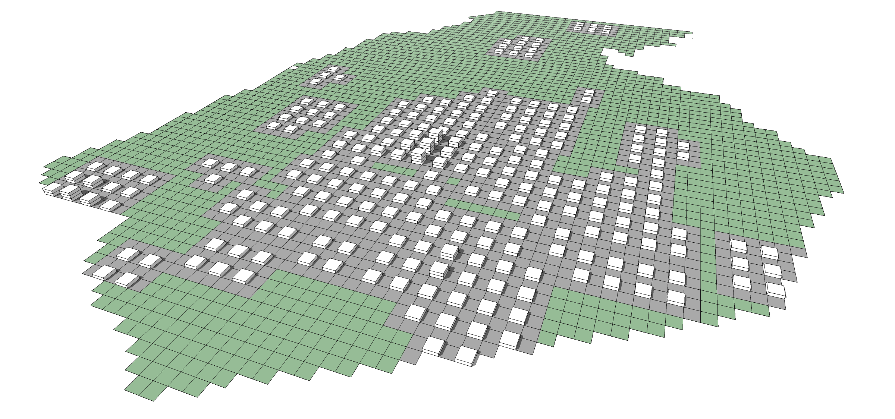
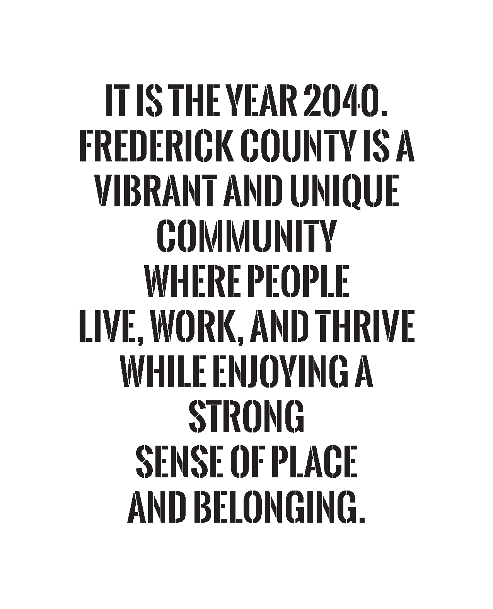
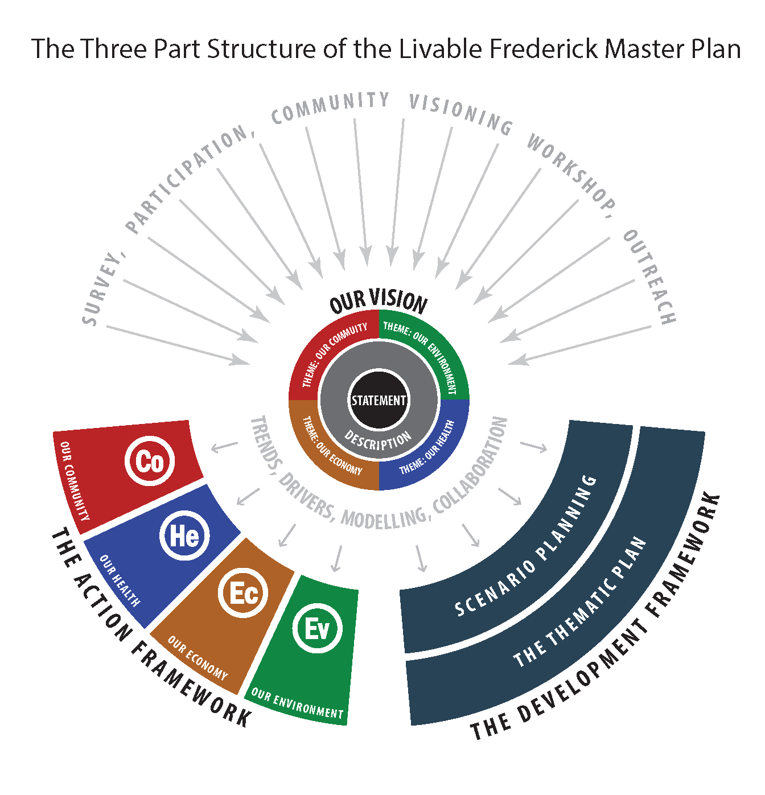
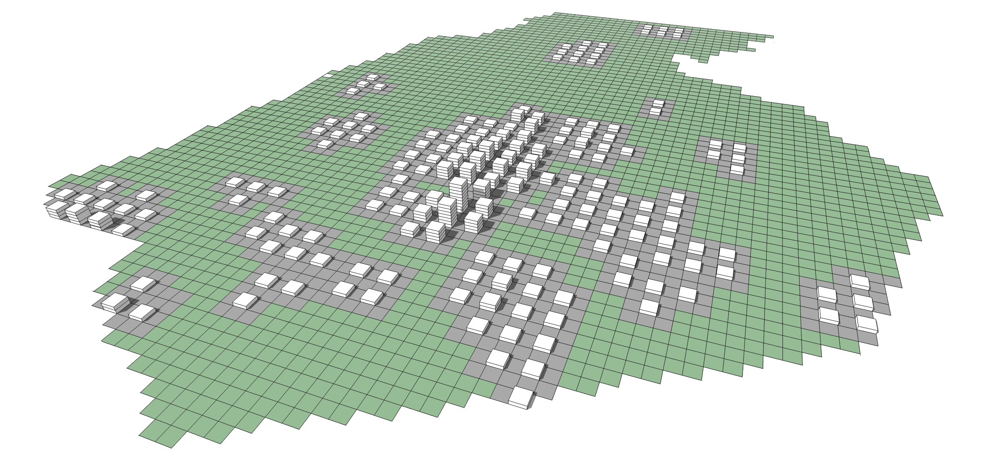
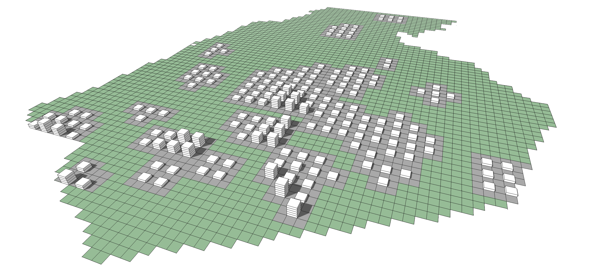
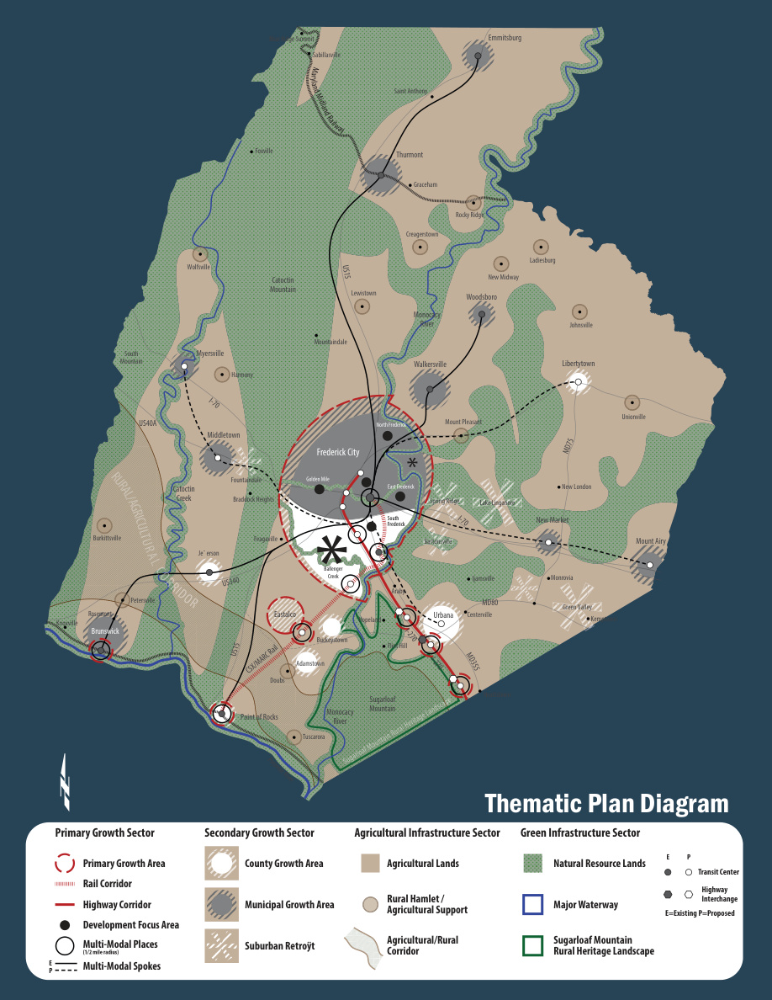
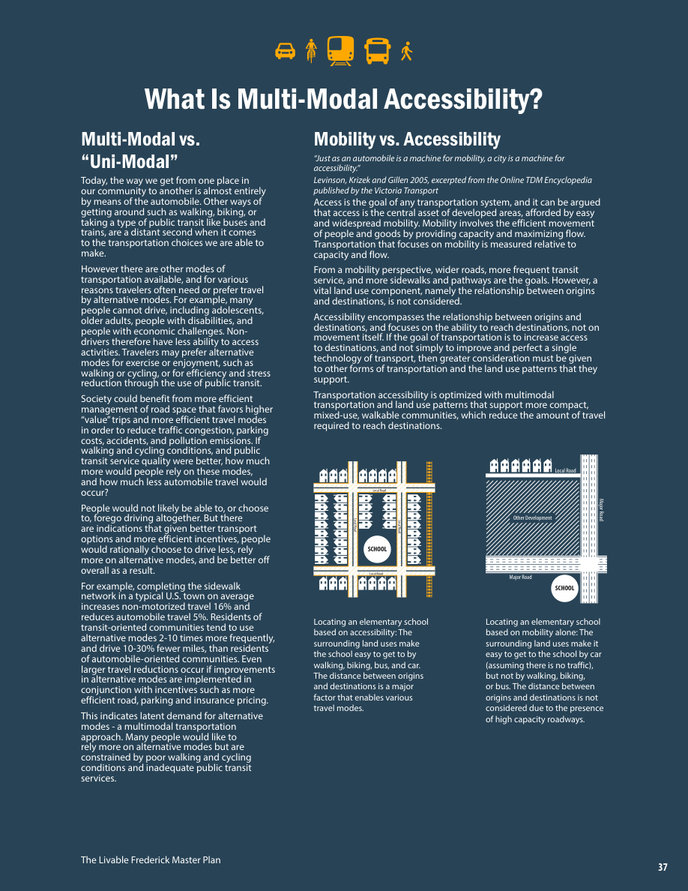
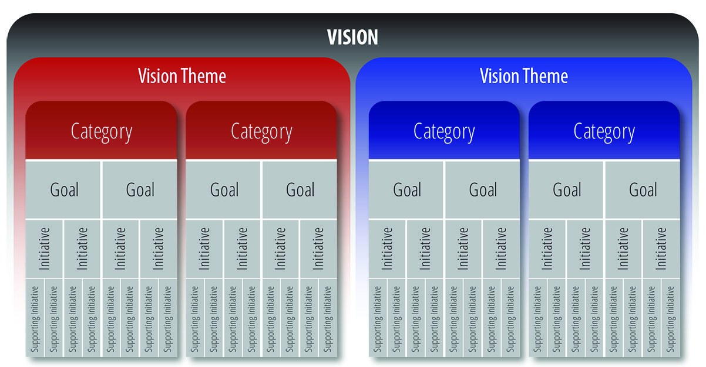

Business As Usual
Continues the existing land-use trajectory and pattern of past growth trends.
A countywide policy framework for creating and sustaining livability, connecting how Frederick County grows with mobility, community health, economic opportunity, environmental stewardship, and a strong sense of place.
The Livable Frederick Master Plan shifts the emphasis of comprehensive planning away from simply assigning future land uses and toward a shared vision, strategic growth patterns, and policy. It is intended to work together with the Comprehensive Plan Map and a continuing series of community, corridor, large-area, and functional plans.
The plan defines livability broadly: access to jobs, parks, schools, services, social connection, healthy places, economic opportunity, and the natural and cultural landscapes that make Frederick County distinctive. The vision provides the starting point for the plan’s development and action frameworks.

Infrastructure, facilities, housing, culture, history, and the physical and social resources that allow communities to function and prosper.
A holistic view of public health that connects physical environments, daily behavior, services, and well-being.
Education, employment, innovation, business strength, agricultural vitality, and the resilience needed to support future prosperity.
The relationship between growth and the natural systems - land, water, air, energy, and ecological resources - that support livable communities.
The plan uses a deliberately connected structure. The Vision establishes the desired future; the Development Framework explores where and in what patterns growth should occur; and the Action Framework translates the vision into goals and initiatives.

Community aspirations, ideas, and preferences expressed as a 2040 vision statement, description, and four themes.
Scenario planning and the Thematic Plan explain the preferred geographic pattern and form of future growth.
Categories, goals, initiatives, and supporting initiatives describe the policy direction needed to move toward the vision.
The scenarios were not treated as mutually exclusive choices. They were used to compare possible growth patterns and their impacts, then combine the strongest ideas into the Thematic Plan. The analysis considered land consumption, housing choice, environmental impacts, accessibility, redevelopment, travel, and market fit.

Continues the existing land-use trajectory and pattern of past growth trends.

Maximizes growth potential in and around Frederick City to strengthen walkable urban living, jobs, culture, and historic identity.
Reinvests in existing suburban communities through infill and redevelopment so more daily needs are closer to home.

Uses rail, transit, and highway assets to catalyze mixed-use redevelopment and new multimodal places.
Unlike a parcel-based land-use map, the Thematic Plan communicates broad growth strategy. Its central idea is a jobs-based approach to growth centered on multi-modal accessibility, while recognizing the substantial pipeline of already-approved conventional development.


The Thematic Plan divides countywide strategy into four sectors. Each has different priorities, but the plan treats all four as necessary to livability: places for focused growth, established communities, natural systems, and the agricultural economy.
Emphasizes a long-term shift toward development patterns with strong infrastructure access, infill and redevelopment potential, and multi-modal connections, especially in and around Frederick City and southern regional corridors.
Builds on the county’s existing Community Concept: compact communities, municipalities, growth areas, and opportunities to improve or retrofit established suburban places.
Protects and reconnects ecologically important hubs and corridors: mountains, forests, wetlands, stream valleys, waterways, and other environmentally sensitive resources.
Supports continued and innovative agriculture, directs urban and suburban growth away from agricultural resources, and recognizes rural hamlets as important centers of farm-support activity and social infrastructure.
The Action Framework takes the broad aspirations of the Vision and organizes them into a hierarchy. Each vision theme contains categories; categories contain goals; goals are advanced by initiatives and more detailed supporting initiatives.

One of the four organizing lenses: Community, Health, Economy, or Environment.
A policy area within a vision theme, such as infrastructure design, housing diversity, healthy habitat, economic strengths, or land.
A broad purpose within a category.
A more specific direction for achieving a goal, often followed by detailed supporting initiatives.
The LFMP identifies community and corridor planning as the heart of its implementation strategy. More detailed plans are intended to translate the countywide vision into place-specific land-use, infrastructure, design, funding, and regulatory decisions.
Detailed small-area plans for growth areas, corridors, villages, neighborhoods, and other cohesive places.
Plans for broader contiguous landscapes or regions where a shared geography warrants coordinated treatment.
Countywide or system-focused plans for topics such as transportation, agriculture, green infrastructure, water, or other networks.
Area-specific planning can revise or inform the Comprehensive Plan Map, zoning, water and sewer planning, and the Capital Improvement Program.